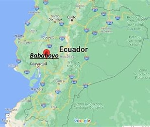
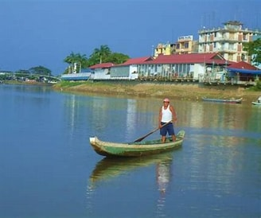

Ubicación estratégica de Babahoyo
Babahoyo está situada en el occidente del Ecuador, en la región litoral, donde actúa como enlace natural entre la Costa y la Sierra.
Su ubicación a orillas del río Babahoyo la convierte en un centro fluvial con importancia comercial, agrícola y cultural.
Desde esta ciudad, se puede conectar fácilmente con urbes como Guayaquil, Quito y Ambato, lo que refuerza su papel como eje estratégico.
| Región |
Occidente del Ecuador, región litoral |
| Acceso fluvial |
Ubicada a orillas del río Babahoyo |
| Conectividad |
Conexión directa con Guayaquil, Quito y Ambato |

Relieve, clima y entorno natural
El relieve de Babahoyo es mayormente plano, formado por suelos fértiles y llanuras húmedas ideales para cultivos como arroz, banano y cacao.
Su clima es tropical húmedo, con temperaturas cálidas durante todo el año, y una abundancia de ríos que enriquecen su ecosistema.
La ciudad pertenece a la cuenca del río Guayas, lo que potencia su biodiversidad y la convierte en un punto atractivo para el turismo ecológico.
| Relieve |
Llanuras fértiles, ideal para cultivos |
| Clima |
Tropical húmedo con temperaturas cálidas |
| Biodiversidad |
Ríos y vegetación enriquecen su ecosistema |

Conectividad y función regional
Por su localización estratégica y su cercanía a importantes vías de transporte, Babahoyo se ha consolidado como un centro logístico
y agrícola de relevancia nacional. Además, su estructura urbana se expande hacia sectores rurales que fortalecen
la producción local y las oportunidades turísticas. Su rol como capital de Los Ríos la posiciona como un corazón económico en expansión.
| Infraestructura vial |
Facilita el transporte comercial y agrícola |
| Expansión urbana |
Integración de sectores rurales al desarrollo |
| Capital provincial |
Centro administrativo y económico de Los Ríos |